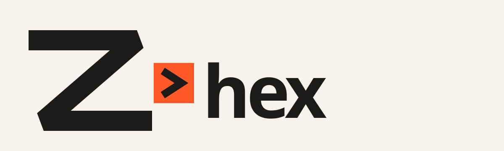

01 · Compose
Small words.
Build programs from focused functions that fit together through explicit flows.

A Forth-inspired language
Compact code with visible flow, meaningful names, and checked types.
Experimental · Working Go interpreter
One file · One flow
The syntax is compact, but the sequence stays visible: read, transform, print.
word greet(name: String) -> String
"Hello, " + name + "!"
let name = console.read-line("Your name: ") try
flow name
greet
printWhy Zhex
We want programs that are easy to reason about and efficient to run.
The goal is a modular language for command-line tools, games, web applications, and database software.
Today, the interpreter runs small programs. Modules and native compilation are planned.
01 · Compose
Build programs from focused functions that fit together through explicit flows.
02 · Follow
Keep data easy to trace, so the path through a program stays visible.
03 · Check
Use checked types to make intent readable before the program runs.
Four examples
Each example introduces one practical idea without burying it in framework code.
Run it yourself
Build and run with Go 1.23 or newer. The interpreter supports small working programs today; repository access is required for local setup.
git clone https://github.com/desireco/zhex.git
cd zhex
go run ./cmd/zhex run examples/hello.zhexThe source repository is currently private. Until access is available, you can browse the public examples or review the roadmap.